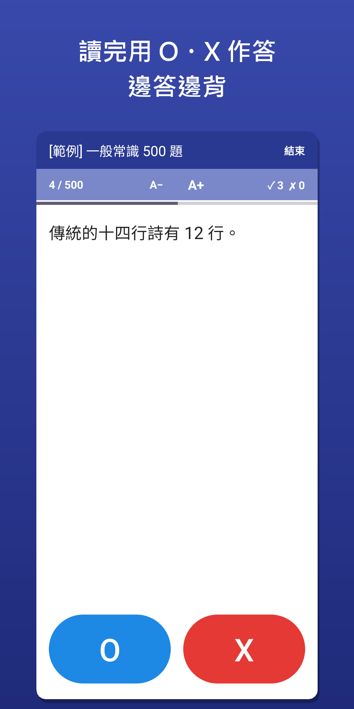
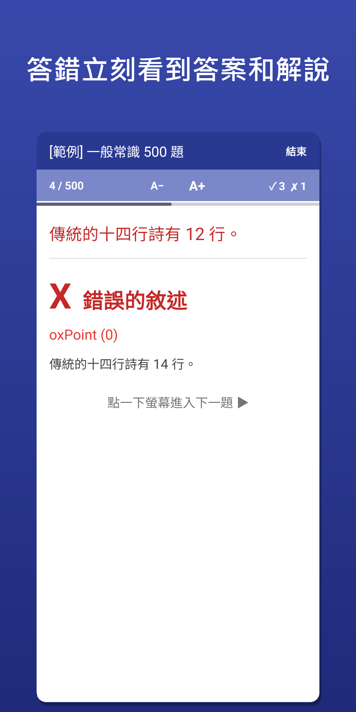
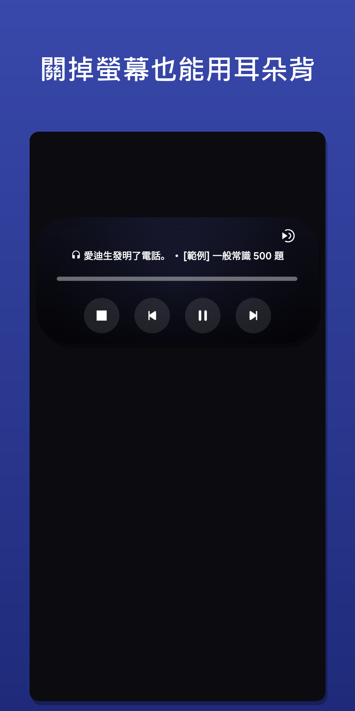
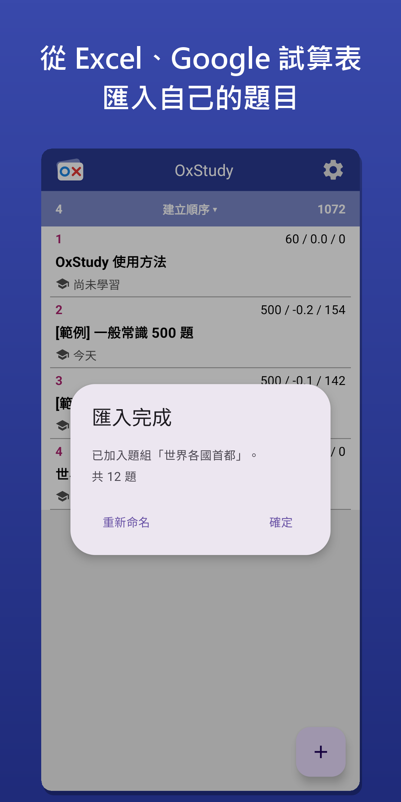

醫學系的上課內容、律師考試等各種考試的敘述、單字的意思、一般常識……只要能用「對或錯」確認的內容，都能做成 OxStudy 的題組。
適合這些學習
- 醫學系基礎醫學背誦：生理學、病理學、藥理學
- 律師、司法官考試第一試選擇題的選項是非整理
- 國家考試、公職、證照的是非題練習與考古題整理（自製題組）
- 單字和名詞背誦，韓語 EPS-TOPIK、TOPIK 準備
- 通勤時用聽的複習
5 種模式
測驗模式
在限制時間（5～40 秒）內點 O 或 X。答錯時會顯示答案和解說，結束後可以只重做答錯的題目。
列表模式
把題目連同答案、解說像讀書一樣瀏覽。拖動右側的捲動控點就能直接跳到想看的地方。
卡片模式
不用碰螢幕，依文字長短自動換下一張的閃卡。
音訊模式
朗讀敘述、答案和解說（1～2 倍速）。關掉螢幕也會繼續朗讀，也有睡眠計時器。
編輯模式
新增題目、修正錯字、搜尋。
從弱題開始：oxPoint
每一題都有 oxPoint：測驗中答對 +1，答錯或超時 −1。可以只選「−2 以下」這類還不熟的題目，或只選還沒做過的題目。
用 Excel 或 Google 試算表製作題組
在 A 欄填敘述、B 欄填答案（O/X）、C 欄填解說，就能直接匯入 Excel（.xlsx）檔案或 Google 試算表。也可以從 App 匯出欄位已排好的空白範本。
| A：敘述 | B：答案 | C：解說 |
|---|---|---|
| 水在 1 大氣壓下於 100 °C 沸騰。 | O | 以海平面（1 大氣壓）為準。 |
| 太陽是行星。 | X | 太陽是恆星。 |
內建範例題組
- 醫學系基礎醫學：生理學、病理學、藥理學 各 100 題（每題都有解說）
- 一般常識 300 題、自然科學 300 題
- 機車駕照筆試 是非練習（試用，僅限台灣）
- EPS-TOPIK 韓語是非題 100 題（每題都有中文解說）
範例題組僅供練習，不保證內容正確。
其他
- 用 .oxstudy 檔案分享題組，所有題組連同學習紀錄一起備份
- 文字大小 90%～400%
- 介面語言：繁體中文、English、한국어、日本語、Tiếng Việt、Español
- 支援手機和平板
- 免費（有廣告）。作答時以及卡片或音訊模式播放時不會出現廣告。題組和學習紀錄只會儲存在你的手機裡。